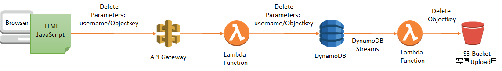
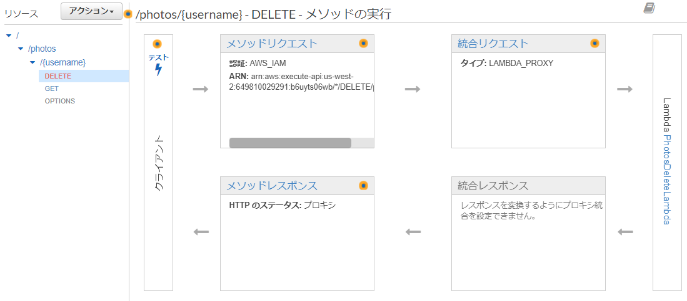

この追加Lab は任意です。
この追加Lab では、アプリケーションに削除機能を追加する方法を検討し実装します。
なお、本ラボでは詳細なステップは記述しません。幾つかの参考情報やヒント、コードスニペットを記載しますので取り組んでみてください。

処理の順番としては、以下のようになります。
なお、今回のアーキテクチャでは、DynamoDB の項目と、S3 の画像削除を一つのLambda 関数内で実施せずに、それぞれ分けて実装する案としています。
理由としては、Lambda 関数は処理途中に障害やタイムアウト超過により実行が失敗する可能性があります。その場合、DynamoDB の項目は削除されて、S3 の画像が残ってしまうといった不整合な状況が残り続けてしまう懸念が発生します。
そこで、今回は、DynamoDB Streams を利用することで、DynamoDB の項目が削除されたら、別のLambda 関数でS3 を消すという処理としています。Streams には高い信頼性の元、データが保持されており安全にLambda 関数を実行できます。
DynamoDB Streams に関しては以下のドキュメントを参照してください。
DynamoDB ストリーム を使用したテーブルアクティビティのキャプチャ
まずは、DynamoDB 削除用のLambda 関数を作成しましょう。
DynamoDB テーブルのデータ削除処理の実装内容は以下のドキュメントを参考にできます。
DynamoDB 開発者ガイド： テーブルからデータを削除する
コード例： DynamoDB の使用開始
このLambda 関数はDynamoDB へのアクセスが必要になりますので、DynamoDB へのDelete 処理を実行できる権限を持ったIAM ロールを作成しておく必要もあります。
API Gateway から受け取ったEvent の処理方法などは、ラボで作成した DevAWSomePhotoAPIStack-DevAWSomePhotoList-xxxxx の実装を参考にできます。 今回は、API Gateway のパスパラメータでUsername を取得します。これはラボで実施した内容そのままです。削除の場合は、どのオブジェクトかを特定する objectkey も引数として受け取る必要があります。今回は、API Gateway へのリクエストの Body 部分でパラメータを受け取ることとします。
Lambda の実装の一部は以下の通りです。DynamoDB 処理はご自身で実装してみてください。（Node.js 8.10 版)
const AWS = require('aws-sdk');
const ddb = new AWS.DynamoDB.DocumentClient();
exports.handler = (event, context, callback) => {
console.log('Received event: ', event);
// パラメータの受け取り
const username = event.pathParameters.username;
const body = JSON.parse(event.body);
const objectkey = body.objectkey;
console.log('username : ' + username);
console.log('objectkey : ' + objectkey);
// dynamodb 処理
// DynamoDB へのDelete 処理をここに記述します。
// レスポンス
callback(null, {
statusCode: 200,
body: '{ result: "OK"}',
headers: {
'Access-Control-Allow-Origin': '*',
}
});
};今回は、DevAWSome-PhotoAPI にDelete 用のメソッドを追加します。
削除する際に指定するキーは、どのユーザのどの画像を指定することになりますので、パラメータとして、username および、objectkey を渡す必要があります。
API Gateway へのパラメータの渡し方としては、username はラボで実施したようにパスパラメータにて渡しています。
/photos/{username}
objectkey は、API Gateway に追加する Delete メソッドへ送信するリクエストの Body で渡す前提で進めます。
実際に、マネージメントコンソールで、ラボの設定内容を参考に Delete メソッドを作成してみてください。
ヒント:
設定は以下のようになります。

アプリケーションに追加するAPI 呼び出しのコード例です。 ラボで実施したget の呼び出しとほとんど一緒であることが確認できます。 今回は、リクエストの body にて objectkey を渡しています。
deletephoto(username, objectkey) {
let apiName = 'DevAWSomeDayAPI';
let path = `/photos/${username}`;
let myInit = {
headers: {},
body: {
objectkey: objectkey
},
response: true
};
API.del(apiName, path, myInit).then(response => {
var data = response.data;
console.log("API call DeletePhoto is succeeded!");
this.setState({
photos: data.Items
});
})
.catch(err => {
console.log(err);
alert("Err: " + err);
});
}以下は、画面レンダリング処理の一例です。
render() {
var labels = this.props.photo.labels;
var preSignedURL = this.props.photo.preSignedURL;
var description = Base64.decode(this.props.photo.description);
var updatetime = this.props.photo.updatetime;
var username = this.props.photo.username;
var objectkey = this.props.photo.objectkey;
return (
<table className="table table-bordered">
<tbody>
<tr><td rowSpan="4" className="col-md-2 text-center">
<div><img alt="phogo" width="150" src={preSignedURL} /></div>
<div><input className="btn btn-primary" type="button" value="delete" onClick={() => this.deletephoto(username, objectkey)} /></div>
</td></tr>
<tr><th scope="row" className="col-md-2">Description</th><td>{description}</td></tr>
<tr><th scope="row" className="col-md-2">Labels</th><td>{labels}</td></tr>
<tr><th scope="row" className="col-md-2">Created</th><td>{updatetime}</td></tr>
</tbody>
</table>
)
}これらのコードをどこに組み込めばよいかは考えてみてください。
S3 オブジェクト削除Lambda 関数は、今回の実装案では、DynamoDB Streams 経由で呼ばれます。
DynamoDB とLambda の連携に関しては、以下のドキュメントを参照してください。 Amazon DynamoDB で AWS Lambda を使用する
今回、このLambda 関数は、S3 にアクセスしますので、S3 へのアクセス権限を持ったIAM ロールを用意する必要がありますが、DynamoDB Streams と連携する場合は、Lambda はStreams へポーリングするという動作になるため、DynamoDB Sreams への読み取り権限も必要になる点にご注意ください。
※：管理ポリシーとして、AWSLambdaDynamoDBExecutionRole が利用できます。
以下、DynamoDB Streams と連携するLambda のコードスニペット(JavaScript版) です。 削除対象のObjectkey をイベントから取り出していますので実際の削除処理は考えてみてください。
参考ドキュメント： S3 deleteObject
const AWS = require('aws-sdk');
const s3 = new AWS.S3();
exports.handler = (event, context, callback) => {
console.log('Received event: ', event);
event.Records.forEach(function(record) {
if(record.eventName == "REMOVE") {
const objectkey = record.dynamodb.Keys.objectkey.S;
console.log("REMOVED ITEM's object key: " + objectkey);
// S3 への削除処理をここに書く
}
});
// TODO implement
callback(null, 'Hello from Lambda');
};※： より効率的な削除処理としては、複数オブジェクトの一括削除(deleteObjects)をコールする方法も考えられます。
Lambda 関数ができたら、DynamoDB をイベントソースに設定することで、アプリケーションの削除処理に伴い、Lambda が実行されます。
このラボは以上となります。